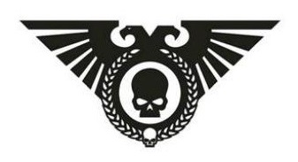

Rogue Trader
| Rogue Trader | |
|---|---|
| Holder of a Warrant of Trade | |
 Emblem of the Rogue Traders, borne on the seals of Warrants of Trade | |
| Formation | M30, the Great Crusade |
| Instrument | The Warrant of Trade |
| Granted by | The Emperor of Mankind (M30–M31); since then the High Lords of Terra, the Navis Nobilite, the Adeptus Mechanicus, the Inquisition and others |
| Term length | Hereditary, within a dynasty |
| Sphere | Beyond the borders of the Imperium of Mankind |
| Powers | Exploration, trade, conquest and contact with xenos |
| Notable dynasties | Haarlock; Chorda; Lathimon; von Valancius; Vhane |
A Rogue Trader is the holder of a Warrant of Trade, a charter that frees its bearer from most of the laws of the Imperium of Mankind and licenses him to travel beyond its borders: to explore, to trade with whomever he finds, including xenos, to claim new worlds for the Emperor and to make war on those who resist. Rogue Traders command their own fleets of starships, with their own Navigators, astropaths and armies, and are among the most powerful and least accountable individuals in the Imperium.[1][2]
The first Warrants were granted by the Emperor of Mankind during the Great Crusade to explorers who would go ahead of the crusade fleets. Since the Horus Heresy they have been granted by the High Lords of Terra and by other powers of the Imperium. Most Warrants are hereditary and pass from one generation of a Rogue Trader dynasty to the next; a Warrant signed by the Emperor himself is the most valued and the most respected.[1]
The Imperium's frontiers, such as the Koronus Expanse beyond the Calixis Sector, have been explored and settled largely by Rogue Traders. Their freedoms make them both useful and suspect, and the Inquisition keeps close watch on dynasties suspected of heresy or of alien sympathies.[2]
History
[edit]The Great Crusade
[edit]The Great Crusade (c. 798.M30 – 000.M31) could not search the whole galaxy with its own fleets. The Emperor granted Warrants of Trade to captains who would scout ahead, find the lost colonies of mankind and report on the xenos empires they met. Some served as advance agents of the expeditionary fleets, and their reports led the crusade to many worlds. The Emperor's own Warrants gave their bearers almost unlimited freedom and conferred on them an authority equal to that of a commander of the crusade.[3][a]
After the Heresy
[edit]After the Horus Heresy (005–014.M31), with the Emperor on the Golden Throne, the power to grant Warrants passed to the High Lords of Terra. In later millennia other institutions have also granted them: the Navis Nobilite, the Adeptus Mechanicus, the Ecclesiarchy and the Inquisition, each with its own purposes. A Warrant's authority depends on its signatory and its age, and older Warrants are often contested by heirs, rivals and the institutions themselves.[1]
Rogue Traders took part in many of the Imperium's later crusades. The Rogue Trader Solomon Haarlock charted the Calyx Expanse in M36, ahead of the Angevin Crusade that made it the Calixis Sector in M39, and in 997.M40 the Rogue Trader Purity Lathimon found a safe passage, the Maw, into the Koronus Expanse beyond. Rogue Trader dynasties remain the principal powers of that frontier. In the Era Indomitus, after the Great Rift opened in 999.M41, some dynasties in the Imperium Nihilus have become the only link between isolated worlds and the wider Imperium.[2][4]
The Warrant of Trade
[edit]
The Warrant is a legal document, written on parchment or engraved on metal, that names its holder and the powers granted. Its terms vary. The oldest grant almost unlimited freedom; later Warrants may restrict their holder to a particular region or task. Common provisions are:
- the right to travel beyond the Imperium and in regions where Imperial authority does not reach;
- the right to trade with any power, including xenos, and to carry otherwise forbidden goods;
- the right to claim worlds for the Imperium and to rule them, or to grant them to others;
- the right to raise armed forces and to make war;
- exemption from many tithes and taxes, and from the authority of Planetary Governors and the Administratum.
A Warrant does not exempt its holder from the authority of the Inquisition, nor from the charge of heresy.[1]
Dynasties and households
[edit]A Rogue Trader commands a household that may number in the hundreds of thousands. Its core is a flagship, often an ancient cruiser of the Imperial Navy or a vessel of unknown origin, and a fleet of escorts and transports. Its officers include a Navigator of the Navis Nobilite, bound by contract to the dynasty, astropaths, a seneschal, an arch-militant who leads the dynasty's armies, missionaries of the Ecclesiarchy and explorators of the Adeptus Mechanicus. Many households keep alien servants or allies, which the Inquisition watches with suspicion.[2]

Rogue Traders vary in temperament. Some are explorers, some merchants, some conquerors, and the Imperium's histories record dynasties of each. A Rogue Trader who leads mainly military expeditions is sometimes called a Rogue Trader Militant; in the 41st millennium some such expeditions are accompanied by detachments of the Adeptus Astartes.[1]
Relations with other powers
[edit]Rogue Traders work closely with the other powers of the Imperium and are watched by all of them. The Navis Nobilite values their contracts, since a dynasty's Navigator may travel with it for life. The Adeptus Mechanicus sends explorators with them in search of archeotech and Standard Template Construct fragments. The Ecclesiarchy sends missionaries to convert the worlds they find. The Inquisition is their most dangerous partner: Inquisitors make use of Rogue Traders' ships and knowledge of the frontier, but also investigate them for heresy, and dynasties have been destroyed for alien dealings. The Imperial Navy tolerates armed Rogue Trader fleets as long as they stay beyond its borders.[2]
Within the Imperium, Rogue Traders often move among the highest nobility, and some dynasties hold estates on hive worlds and seats at sector courts. Their wealth, drawn from the frontier, has made several of them richer than many Planetary Governors.[1]
Notable Rogue Traders
[edit]| Name | Dynasty | Period | Known for |
|---|---|---|---|
| Erasmus Haarlock | Haarlock | M41 | Explorer of the Koronus Expanse; vanished with his dynasty's secrets |
| Aspyce Chorda | Chorda | M41 | Matriarch of a powerful Calixian dynasty |
| Solomon Haarlock | Haarlock | M36 | Charted the Calyx Expanse |
| Purity Lathimon | Lathimon | 997.M40 | Discovered the Maw into the Koronus Expanse |
| Theodora von Valancius | von Valancius | late M41 | Dynasty of the Koronus Expanse, succeeded by an heir after her murder |
| Elucia Vhane | Vhane | Era Indomitus | Explorer of space hulks and lost vessels |
Timeline
[edit]| Date | Event |
|---|---|
| c. 800s.M30 | The Emperor grants the first Warrants of Trade during the Great Crusade |
| 014.M31 | After the Siege of Terra the power to grant Warrants passes to the High Lords |
| M36 | Solomon Haarlock charts the Calyx Expanse |
| 997.M40 | Purity Lathimon discovers the Maw into the Koronus Expanse |
| 999.M41 | The Great Rift isolates many dynasties in the Imperium Nihilus |
See also
[edit]Notes
[edit]- ^ The earliest surviving Warrants are dated by the Navis Nobilite to the first decades of the Great Crusade; no exact year is recorded for the first grant.
References
[edit]- ^ a b c d e f Codex Imperialis (rev. 980.M41). Adeptus Terra.
- ^ a b c d e Charts and Annals of the Koronus Expanse (rev. M41). Calixian Conclave, Ordo Xenos.
- ^ Sindermann, Kyril (c. 004.M31). Remembrances of the 63rd Expedition. Remembrancer Order.
- ^ Records of the Indomitus Crusade (ongoing). Office of the Lord Commander.